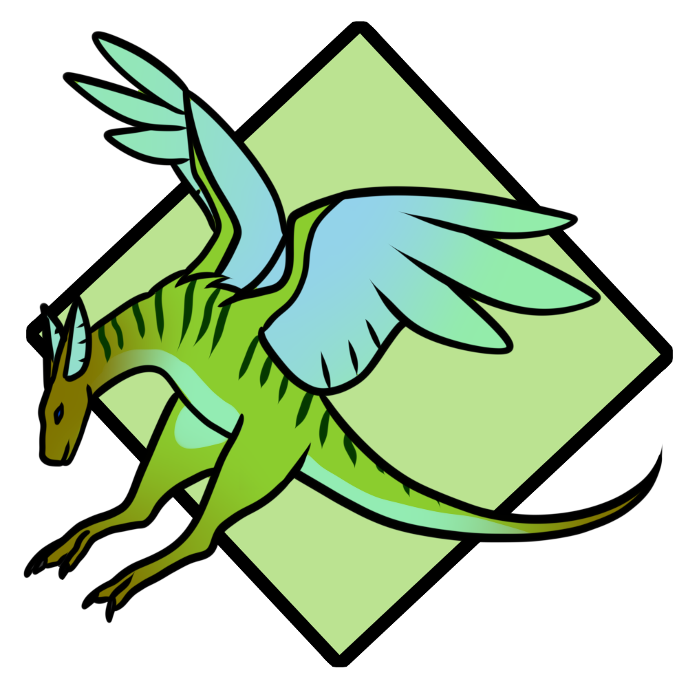

False Drakes, a close cousin to the Drace, but lacking intelligence.

The Thorned Snake can grow up to twenty feet long and is a species that burrows under the sand to ambush prey.

Screaming Scorpions, despite their size and appearance, are weak and rarely cost someone their life.